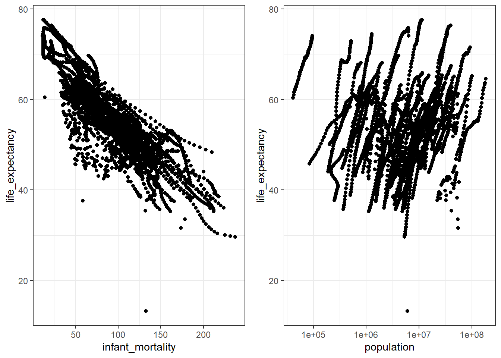
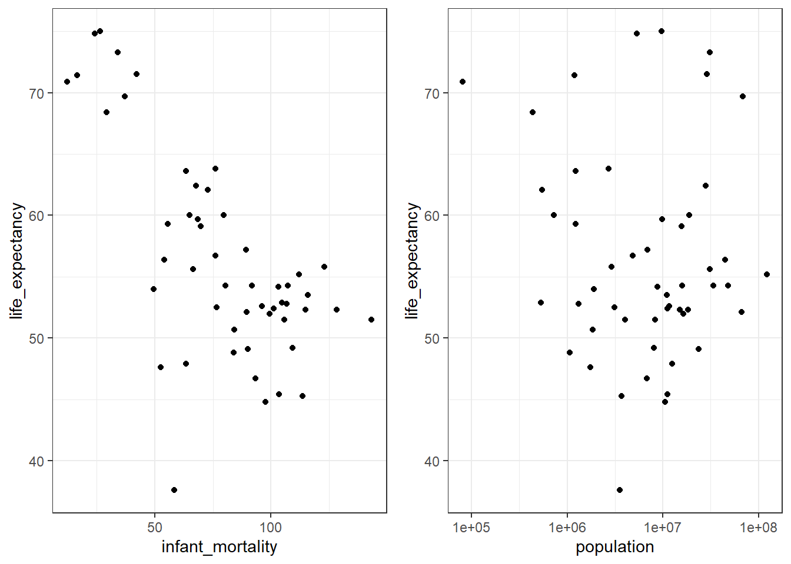

library("dslabs")Warning: package 'dslabs' was built under R version 4.4.3library("tidyverse")Warning: package 'tidyverse' was built under R version 4.4.3Warning: package 'ggplot2' was built under R version 4.4.3Warning: package 'readr' was built under R version 4.4.3Warning: package 'forcats' was built under R version 4.4.3Warning: package 'lubridate' was built under R version 4.4.3── Attaching core tidyverse packages ──────────────────────── tidyverse 2.0.0 ──
✔ dplyr 1.1.4 ✔ readr 2.1.5
✔ forcats 1.0.0 ✔ stringr 1.5.1
✔ ggplot2 3.5.2 ✔ tibble 3.2.1
✔ lubridate 1.9.4 ✔ tidyr 1.3.1
✔ purrr 1.0.4
── Conflicts ────────────────────────────────────────── tidyverse_conflicts() ──
✖ dplyr::filter() masks stats::filter()
✖ dplyr::lag() masks stats::lag()
ℹ Use the conflicted package (<http://conflicted.r-lib.org/>) to force all conflicts to become errorslibrary("ggplot2")
library("gridExtra")
Attaching package: 'gridExtra'
The following object is masked from 'package:dplyr':
combine#creating an object from df:gapminder that only contains African countries
africadata <- gapminder %>%
filter(region %in% c("Northern Africa", "Southern Africa", "Western Africa", "Eastern Africa", "Middle Africa"))
#creating an object from df:africadata that only contains infant_mortality and life_expectancy
africadata1 <- africadata %>%
select(infant_mortality, life_expectancy)
#creating an object from df:africadata that only contains population and life_expectancy
africadata2 <- africadata %>%
select(population, life_expectancy)
#plotting life_expectancy as a function of infant_mortality using df:africadata1
P1 <- ggplot(africadata1, aes(x=infant_mortality, y=life_expectancy))+
geom_point()+
theme_bw()
#plotting life_expectancy as a function of population using df:africadata2
P2 <- ggplot(africadata2, aes(x=population, y=life_expectancy))+
geom_point()+
theme_bw()
grid.arrange(P1, P2, ncol=2)Warning: Removed 226 rows containing missing values or values outside the scale range
(`geom_point()`).Warning: Removed 51 rows containing missing values or values outside the scale range
(`geom_point()`).
#checking which years have missing data on infant_mortality
aggregate(is.na(infant_mortality) ~ year, data=africadata, sum) year is.na(infant_mortality)
1 1960 10
2 1961 17
3 1962 16
4 1963 16
5 1964 15
6 1965 14
7 1966 13
8 1967 11
9 1968 11
10 1969 7
11 1970 5
12 1971 6
13 1972 6
14 1973 6
15 1974 5
16 1975 5
17 1976 3
18 1977 3
19 1978 2
20 1979 2
21 1980 1
22 1981 1
23 1982 0
24 1983 0
25 1984 0
26 1985 0
27 1986 0
28 1987 0
29 1988 0
30 1989 0
31 1990 0
32 1991 0
33 1992 0
34 1993 0
35 1994 0
36 1995 0
37 1996 0
38 1997 0
39 1998 0
40 1999 0
41 2000 0
42 2001 0
43 2002 0
44 2003 0
45 2004 0
46 2005 0
47 2006 0
48 2007 0
49 2008 0
50 2009 0
51 2010 0
52 2011 0
53 2012 0
54 2013 0
55 2014 0
56 2015 0
57 2016 51#creating an object from df:africadata that only contains data from year 2000
africadata2000 <- africadata[africadata$year==2000,]
#creating an object from df:africadata2000 that only contains infant_mortality and life_expectancy
africadata3 <- africadata2000 %>%
select(infant_mortality, life_expectancy)
#creating an object from df:africadata2000 that only contains population and life_expectancy
africadata4 <- africadata2000 %>%
select(population, life_expectancy)
#plotting life_expectancy as a function of infant_mortality using df:africadata3
P3 <- ggplot(africadata3, aes(x=infant_mortality, y=life_expectancy))+
geom_point()+
theme_bw()
#plotting life_expectancy as a function of population using df:africadata4
P4 <- ggplot(africadata4, aes(x=population, y=life_expectancy))+
geom_point()+
theme_bw()
grid.arrange(P3, P4, ncol=2)
#using the lm function to fit life expectancy as the outcome and infant mortality as the predictor using df:africadata3
fit1 <- lm(life_expectancy ~ infant_mortality, data=africadata3)
summary(fit1)
Call:
lm(formula = life_expectancy ~ infant_mortality, data = africadata3)
Residuals:
Min 1Q Median 3Q Max
-22.6651 -3.7087 0.9914 4.0408 8.6817
Coefficients:
Estimate Std. Error t value Pr(>|t|)
(Intercept) 71.29331 2.42611 29.386 < 2e-16 ***
infant_mortality -0.18916 0.02869 -6.594 2.83e-08 ***
---
Signif. codes: 0 '***' 0.001 '**' 0.01 '*' 0.05 '.' 0.1 ' ' 1
Residual standard error: 6.221 on 49 degrees of freedom
Multiple R-squared: 0.4701, Adjusted R-squared: 0.4593
F-statistic: 43.48 on 1 and 49 DF, p-value: 2.826e-08#Infant mortality was strongly negatively associated with life expectancy (-0.19, p=2.83e-08). If infant mortality = 0, the average life expectancy would be 71.3 years. For each unit increase in infant mortality, the model assumes life expectancy to go down by 0.19 years (~2.4 months).
#using the lm function to fit life expectancy as the outcome and population as the predictor using df:africadata4
fit2 <- lm(life_expectancy ~ population, data=africadata4)
summary(fit2)
Call:
lm(formula = life_expectancy ~ population, data = africadata4)
Residuals:
Min 1Q Median 3Q Max
-18.429 -4.602 -2.568 3.800 18.802
Coefficients:
Estimate Std. Error t value Pr(>|t|)
(Intercept) 5.593e+01 1.468e+00 38.097 <2e-16 ***
population 2.756e-08 5.459e-08 0.505 0.616
---
Signif. codes: 0 '***' 0.001 '**' 0.01 '*' 0.05 '.' 0.1 ' ' 1
Residual standard error: 8.524 on 49 degrees of freedom
Multiple R-squared: 0.005176, Adjusted R-squared: -0.01513
F-statistic: 0.2549 on 1 and 49 DF, p-value: 0.6159#Population size was not associated with life expectancy (2.756e-08, p=0.616). Unlike infant mortality, population size only explained ~0.5% (Multiple R-squared) of the variation in life expectancy.